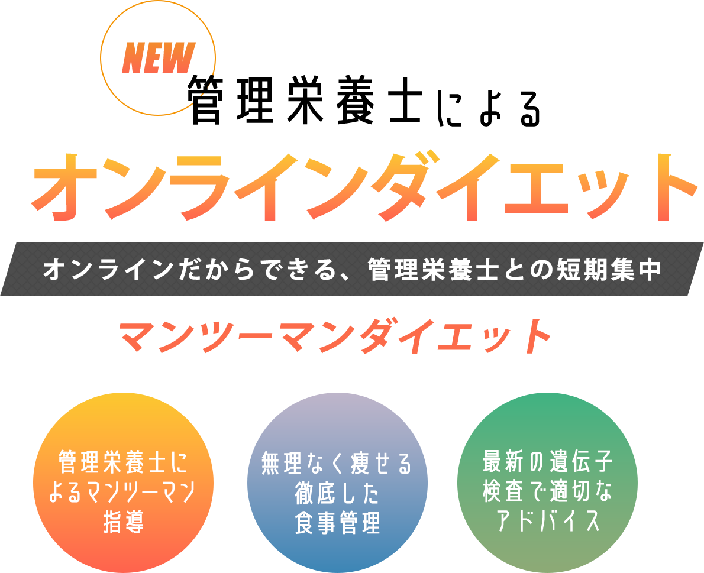

DATA

運動が苦手、抵抗がある方
スポーツクラブに
通うのが難しい方
リバウンド経験がある方
オンラインサービスが
続かなかった方
LEALIFEでは、国家資格を持つ管理栄養士が直接お客様にオンラインで食事指導をおこないます。
今までに何人もダイエットを成功に導いてきた、生活習慣を改善するプロフェッショナルです。
お客様一人に対して、管理栄養士が専属で担当します。
お客様の生活習慣や嗜好、そして遺伝子情報に合わせた指導は、1対1だからこそできるもの。
一人ひとり全く異なる内容の指導だからこそ、より高い成果につながります。
決められた店舗に行くことなく、習慣化支援アプリによっていつでも管理栄養士と繋がれます。
日々の食事の記録からアドバイスを受けたり、聞きたいことを尋ねたり。

お客様の食生活や生活習慣を、LEALLIFE独自の問診票 を用いて、これまでの経緯を伺います。
お客様の目的やライフスタイルに合った、無理なく最適なプランを一緒にプランニングします。
肥満の原因は、その３～５割が遺伝によるものだと言われています。人によって、同じことをしているのに太ったり太らなかったり、痩せたり痩せなかったり。
それは、遺伝子のタイプが違うからかもしれません。
LEALLIFEでは、遺伝子を8つのタイプに分類して、どういう行動が太りやすいか、痩せやすいかなどを分析。それを踏まえた指導をおこなっています。
管理栄養士が専属になるからこそのサポートはLEALLIFEの最大の特徴です。
先の遺伝子検査を含めたお客様の情報に合わせた、完全オーダーメイドの指導メニューを作成します。
専属だからこそできる地続きの指導で、2か月間という短い時間を無駄なく活かします。
習慣化支援アプリ「ONDIARY」を活用することで、管理栄養士が常にサポート。気が抜けがちな期間半ばも、毎日の食事を担当の管理栄養士に報告し続けることで、中だるみを防止します。
頑張れば褒められたり、食材についてアドバイスをもらったり、分からないことは質問したり。オンラインだからできる気楽さがダイエットを身近に感じさせてくれます。
指導された内容をしっかりとこなしていくと、段々と効果が表れます。
油断しがちなこのタイミングや、2か月間の指導期間が終わった後に、リバウンドしないためのアドバイスも続けていきます。
どうやって痩せるか、だけではなく、どのようにして良い状態をキープするのかについてもしっかりとお伝えします。
改善前
DATA
BEFORE
改善後
POINT
朝食
胃下垂のためたくさん食べるのは食欲増加してよくない、またそんなにそろえて用意ができないとのことでしたので、プロテインを飲むことを提案
昼食
外食やコンビニのおすすめのメニューを提案
※チエーン店を利用することが多かったため
特に行くお店を聞いてどの商品がいいか提案
※コンビニではおにぎり1個、おかず1個、（サラダチキンなど）、サラダなど野菜2品
→遺伝的に糖質もリスクがあるためおにぎりは玄米や雑穀米を提案
夕食
外食時の時は昼食同様（ただし、主食カット）
家での食事の時はおかず1品、野菜2品を揃えることを提案
アルコール
ビールを蒸留酒（ウイスキーやハイボール）に置き換え、摂取量を見直した
AFTER
まずは無料カウンセリングで、イメージをつかみましょう。
「食事指導って、具体的にどんなことをするの？」や、「今の生活をどれくらい変えればいいの？」など、実際に聞いてみないと分からないことや、気になっていることを相談してみましょう。
50代女性
K.O様
40代女性
N.N様
60代男性
H.Y様
管理栄養士とは、厚生労働省から認定されている栄養士法に基づく国家資格です。 人それぞれに合わせて、専門知識と技術によって栄養の管理や指導をおこないます。
資格の取得には、栄養士資格（都道府県知事によって認定）を持っている人が、管理栄養士国家試験を受ける必要があります。
栄養士資格には高校卒業後に栄養士養成施設（専門の課のある大学等）に2年以上通い特定の単位を取得しなくてはなりません。その栄養士資格を得た後、在学期間と併せて5年以上の栄養指導への従事した人、もしくは管理栄養士養成施設を終了して栄養士免許を得た人が上記の管理栄養士国家試験に合格することで、厚生労働大臣によって認定されます。 高い専門知識や実務経験によって保障される、栄養のプロフェッショナルが、管理栄養士です。
食事量や食事時間、食事の内容など、減量に必須の内容をレアレア独自の問診票で聞き取りを行います。 早く効果を出すために優先順位を付けて、その人に合ったアドバイスを行います。
食事の全体量が足りているか、必要な栄養素が摂れているかなど、食事記録や食事写真を用いながら、食事内容を決めていいます。
お客様の健康診断やメタボ健診での結果をもとに、食事面をサポートします。 普段の食生活でどんなことを気にしたら、数値を改善できるか、アドバイスを行いながら、実践していきましょう。
女性特有の悩み（冷え、むくみ、PMS、更年期、産後の体重増加）に対して、食習慣や生活習慣全般について伺い、アドバイス致します。 女性の悩みは、一つではなく、複合している部分もありますので、一つ一つ解決して聞きましょう。
最近疲れやすい、風邪をよく引く、お腹の調子が良くない、便秘がち、そんなお悩みはありますか？ それぞれの悩みに合わせた食事改善をおこない、体調を変えていきましょう。
（ただし眠気覚ましにエナジードリンクは飲んでいた）
※この時期車内なので痛む可能性があり、お弁当を作って持っていくことは抵抗あり
（料理好きとのこと）
おなかも下しやすい太ってしまった一番の原因は日頃の外食で吉野家、てんや、マック、丸亀など選んでいたことが理由と考えられる